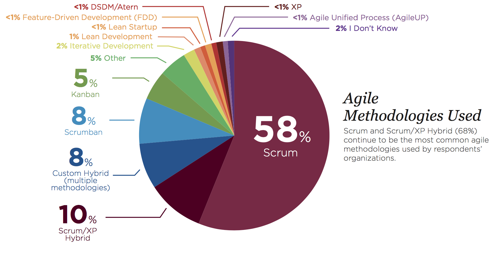

Métodos Ágeis
Agile Academy
@raphaelmolesim
Agenda
- 1. Overview
- 2. Scrum
- 3. eXtreme Programming
- 4. Kanban

Métodos mais utilizados
 fonte: Dados de 2015 até 2016, http://stateofagile.versionone.com/Nível de Prescrição
| Método | Foco | Diferenças |
|---|---|---|
| Scrum | Execução de Entregas |
|
| eXtreming Programming | Desenvolvimento de Software |
|
| Kanban | Fluxo completo |
|
Scrum
Scrum (subs): Um framework dentro do qual pessoas podem tratar e resolver problemas complexos e adaptativos, enquanto produtiva e criativamente entregam produtos com o mais alto valor possível. Scrum é:
- Leve
- Simples de entender
- Extremamente difícil de dominar
Mas será que isso é o suficiente?
Não, por definição.
Há uma confusão que eu tenho ouvido com alguns projetos recentemente. Funciona assim:
- Eles querem utilizar um processo ágil, e escolhem Scrum
- Eles adotam as práticas do Scrum, e talvez até os princípios
- Depois de um tempo, progresso é lento porque a base de código está uma bagunça
A comunidade Scrum precisa redobrar seus esforços para garantir que as pessoas entendem a importancia de praticas técnicas fortes.
Martin Fowler, 2009
fonte: https://martinfowler.com/bliki/FlaccidScrum.htmleXtreme Programming
"XP é o caminho para um programador buscando assumir responsabilidade pelo seu trabalho."
Kent Beck
Communication
Motion without communication is not progress.
Simplicity
To make a system simple enough to gracefully solve only today’s problem is hard work
Feedback
Directions set in advance of experience have an especially short half-life.
Courage
The courage to speak truths, pleasant or unpleasant, fosters communication and trust.
Respect
If members of a team don’t care about a project, nothing can save it.
XP possue 14 princípios
- Humanity
- Economics
- Mutual Benefit
- Self-Similarity
- Improvement
- Diversity
- Reflection
- Flow
- Opportunity
- Redundancy
- Failure
- Quality
- Baby Step
- Accepted Responsibilit
XP possue 24 práticas
Práticas de XP versão 1.0

Programmer Centric Approach
If I don't have time/budget constrains, what would I do?
Fine scale feedback
Whole Team
Test-First Programming
Pair Programming
Continuous process rather than batch
Incremental Design
Continuous Integration
Daily Deployment
Shared understanding
Real Customer Involvement
Sit Together
Stories
Shared Code
Programmer welfare
Energized Work
Slack
Negotiated Scope Contract
E agora é o sufuciente?
High Resistence Environment
Kanban Method
The Kanban Method is an approach to incremental, evolutionary process and systems change for organizations.
David J. Andersson
Kanban Values
The Kanban Method is motivated by the belief that respecting all of the individuals who contribute to a collaborative enterprise is necessary, not only for the success of the venture, but for it to be worthwhile at all.
Kanban’s values may be summed up in that single word, “respect.”
The Kanban Method is motivated by the belief that respecting all of the individuals who contribute to a collaborative enterprise is necessary, not only for the success of the venture, but for it to be worthwhile at all.
Kanban’s values may be summed up in that single word, “respect.”
Change Management Principles
- Start with what you do now:
- understanding current processes, as they are actually practiced
- and respecting existing roles, responsibilities, and job titles.
- Agree to pursue improvement through evolutionary change.
- Encourage acts of leadership at every level—from the individual contributor to senior management.
Service Delivery Principles
- Understand and focus on your customers needs and expectations.
- Manage the work; let people self-organize around it.
- Evolve policies to improve customer and business outcomes.
Kanban Practices
- Visualize.
- Limit work in progress.
- Manage flow.
- Make policies explicit.
- Implement feedback loops.
- Improve collabora- tively, evolve experimentally.
Describing a flow system
The Little Law
Lead Time
John Little
Imagine um pizzaria que faz 20 pizzas por hora, e existem 10 pizzas em progresso por vez. Você que descobrir quanto tempo demora para sair uma pizza.
Work In Progress = 10 pizzasThroughput = 20 pizzas por hora
20 pizzas por hora
Lead Time = 0.5 horas